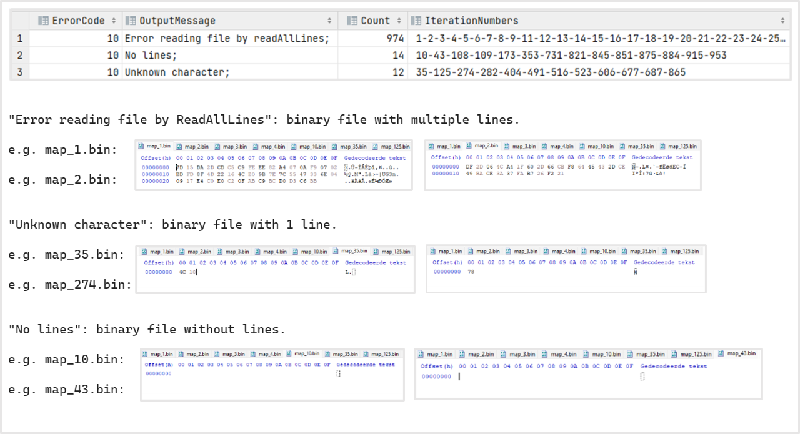

Context:
In this stage, the maps are binary with a normal maximum size. The bytes are chosen randomly. The name of the map file
is normal. We will randomly choose bytes with the RandomBinaryMapGenerator.generateRandomMap() method.
The action sequence will exist out of 5 characters (randomly chosen out the valid options E, S, U, D, Q, W, L and R). It
will have a normal name.
Configs:
Configure the Configuration.properties file as followed:
Results:
The results are stored in the fuzz1_binary directory. Putting the typeFile=bin in configs and
running the Fuzz class would give u something like shown in the above figure.
Open the binary files in a binary editor like HxD to see for yourself.
We can see that if the binary file has multiple lines, we get an Error reading file by readAllLines. If the binary file has one line, the program JPacman starts to read the line. If the line contains characters that are not valid, it will give another error message. We know from the given assignment text, that a text file can have multiple lines in it and still be read.
if(file has multiple lines)
if(file is not a text file)
reject(Error reading file by readAllLines)
if(file has one line)
if(file is not a text file)
if(file is binary file)
if(line is not a a valid character)
reject(unknown character)
if(line is valid character)
?
?
?
if(file has no lines)
if(file is a binary file)
reject(no lines)
Context:
If I want to know if one-line binary files can be valid, I first need to know what the valid characters are. Let's make
a text map that always includes one of the 128 characters of the ASCII range.
We do this by using the method RandomTextMapGenerator.generateCustomTextMap(String mapLine). The name of the map
file is normal.
The action sequence will exist out of 3 valid characters in a valid sequence: Start (S) - Wait (W) - Exit (E). The name
of the string will be normal.
Configs:
Configure the Configuration.properties file as followed:
Results:
The results are stored in the fuzz2_knownCharacters directory. A summary of the results is shown in
the above figure. If it is a valid file and not an empty one, look at the characters inside.
If they are all valid character, look at the presence of all the needed characters. Note also that we did not test for
other alphabets or characters outside the ASCII range (e.g. Not all characters from UNICODE such as emoji's).
if (the file is not valid)
reject(Error reading file by readAllLines)
if(the map does not contain valid characters (M, W, F, P))
reject(unknown character)
if(the map does not contain character P)
reject(no player is set)
if(the map does not contain character F)
reject(no food is set)
Context: We still use all valid action sequence strings, since we are focussing on the map file first.
If u want to use my custom_maps, copy the file in the maps directory of the fuzz3_filetypes (program will move them while executing the fuzzer). If u copy-paste the files to maps, make sure to reconfigure permissions files (otherwise will be accepted). for none permissions -> move copy read and reconfigure
Make sure to run afterwards with none of the files open, otherwise error because they can't move certain files (e.g., the encoded)
Configs:
Results: We are going to have to put the file without permissions out of the list because it gives an error in the fuzzer. The same happens with the Encrypted file! -> nog eens checken, niet zeker, was nu rejected
For the first time, the program accepted some files!
Some rejected file types were:
if(file not encrypted or no read or write permission)
cannot do input in terminal
if(file is compressed, not encoded with UTF-8, or from an invalid data type (pdf, excel or multi-line binary))
reject(Error reading file by ReadAllLines)
if(file is empty)
reject(No lines)
if(file is .csv, or multi-line .dat)
if(the map does not contain valid characters (M, W, F, P))
reject(unknown character)
if(the map does not contain character P)
reject(no player is set)
if(the map does not contain character F)
reject(no food is set)
else
accept
Context:
Configs:
Results:
if(file not encrypted or no read or write permission)
cannot do input in terminal
if(file is compressed, not encoded with UTF-8, or from an invalid data type (pdf, excel or multi-line binary))
reject(Error reading file by ReadAllLines)
if(file is empty)
reject(No lines)
reject(No columns)
if(file is .csv, or multi-line .dat)
if(the map does not contain valid characters (M, W, F, P))
reject(unknown character)
if(the map does not contain character P)
reject(no player is set)
if(the map contains multiple characters P)
reject(more than one player)
if(the map does not contain character F)
reject(no food is set)
else
accept
Context:
Configs: